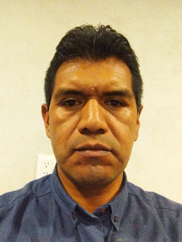

Nefi Castro Luna | WWD130
Hi! My name is Nefi Castro, I'm from Puebla,México. I'm married since 2008, my wife is Marisol and we have three children, I work by myself, I have a little factory of concrete bricks, this is my job of full-time. My routine is very simple, I move from my house, to my job or to the church, my factory is behind of my house and the church is just one hundred and fifty metters (0.09 miles)from my house. However I have a lot of hoobies, I like playing basketball, watching comedy movies,folk music and chess. Right now I am learning how to play the guitar and... learning programming. The last is not exactly a hobbie, I would like to be a profesional programmer in the future. I always wanted to be programer, this is a grate chance and I'm grateful for this opportunity. I hope we can be friends and have some fun time. So long.